Um mundo de possibilidades com Flexbox
Gustavo Quinalha

CONTINUAÇÃO
Essa é uma série de slides sobre Flexbox, você pode conferir o anterior clicando aqui.
Can i use?
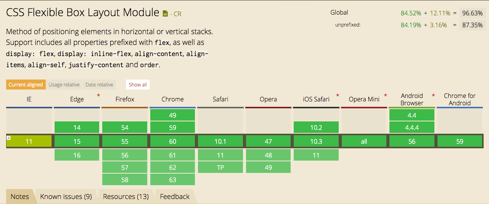
Flexbox
flex-directionflex-wrapjustify-contentalign-items
orderalign-selfflex-growflex-basis
Mas parsa, o que realmente podemos fazer com tudo isso?
Row(default)
Column
Row-reverse
Column-reverse
flex-basis: 600px; flex-grow: 1
no-wrap(default)
wrap
flex-start
center
flex-end
space-around
space-between
flex-start
center
flex-end
flex-end
"Elementos filhos em um layout flex podem ser posicionados em qualquer direção e possuem dimensões flexíveis para se adaptar ao espaço disponível"
Fonte: https://developer.mozilla.org/pt-BR/docs/CSS/Usando_caixas_flexiveis_css"Posicionar esses filhos pode ser feito facilmente, e layouts complexos podem ser construídos de uma maneira mais clara e limpa . A ordem de exibição dos elementos é independente da ordem no código fonte."
Fonte: https://developer.mozilla.org/pt-BR/docs/CSS/Usando_caixas_flexiveis_cssÉ responsabilidade do pai cuidar e escolher o melhor caminho para seu filho.

EXEMPLOS
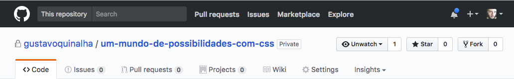


Não reinvente a roda blablabalabalalabalalala
BULLSHIT!
Um pouco de história
As primeiras representações de rodas foram feitas de argila (3500 a.C.) Logo depois feita com madeira cortadas em formato arredondado (após esse momento já percebemos a existência de carruagens e carroças).
O primeiro aperfeiçoamento em relação aos modelos originais foi provavelmente a colocação de um aro de madeira, o que permitia um desgaste uniforme da roda em toda sua superfície.
Quinhentos anos mais tarde surgiriam os primeiros aros de metal. A roda com raios surge na Mesopotâmia ou na atual Turquia, e é utilizada em carros de guerra. Em torno de 1500 a.C., os egípcios dominam a tecnologia, com a construção de rodas de quatro raios, bastante leves.
Sem a roda, o homem não iria muito longe. As principais fontes de energia que o homem utiliza para sua existência são fundamentadas na roda: a água, a energia elétrica, locomoção... O simples carrinho de mão inventado pelos chineses, cerca de 200 a.C., conduz sete vezes mais carga e passageiros do que o ombro humano. A bicicleta criada na França em 1645, permitia velocidades até três vezes maiores do que a de um homem caminhando. Também o avião, que foi muito bem usado na guerra.
- Invenção da Roda: com data aproximada de sua mais antiga utilização de 3500 a.C, pelo povo da Suméria, seu invento proporcionou ao ser humano maior mobilidade, já que anteriormente, o transporte era muito limitado em técnicas com troncos de madeira;
- Surgimento do Barco a Vapor (1807): a máquina a vapor foi essencial para muitos meios de transporte, especialmente os navios. O primeiro barco a vapor bem sucedido, foi inaugurado pelo americano Robert Fulton e era chamado de Clermont. Dentro do transporte marítimo, o vapor era capaz de movimentar essas máquinas pelos oceanos;
- Surgimento do Transporte Ferroviário (1830): O transporte ferroviário tornou-se popular a partir de 1830 e um dos principais inventores foi George Stephenson, criador da locomotiva a vapor;
- Invenção do Automóvel Moderno (1886): o alemão Karl Benz foi o responsável pela criação do primeiro automóvel de três rodas movido à gasolina;
- Surgimento da Aviação Comercial (1926): o avião abriu a nova fase de revolução nos transportes e sua criação é atribuída a três pessoas, os irmãos americanos Wilbur e Orville Wright (1903) e Santos Dumont (1906). Com esse meio de transporte, a população não precisa mais utilizar apenas os navios para fazer longas viagens;
- Início do Transporte Espacial (1926): o transporte espacial começou a ser introduzido pelo americano Robert H. Gooddard, criador dos primeiros foguetes de combustível líquido.
VOCÊ PODE FAZER MELHOR!!!!
Com base naquilo que já existe, você pode e deve criar algo melhor. Nada é completo!
O viva na base de frameworks e plugins =)
Na web nada se cria, nada se perde, tudo se transform.
Meus projetos
Sizify
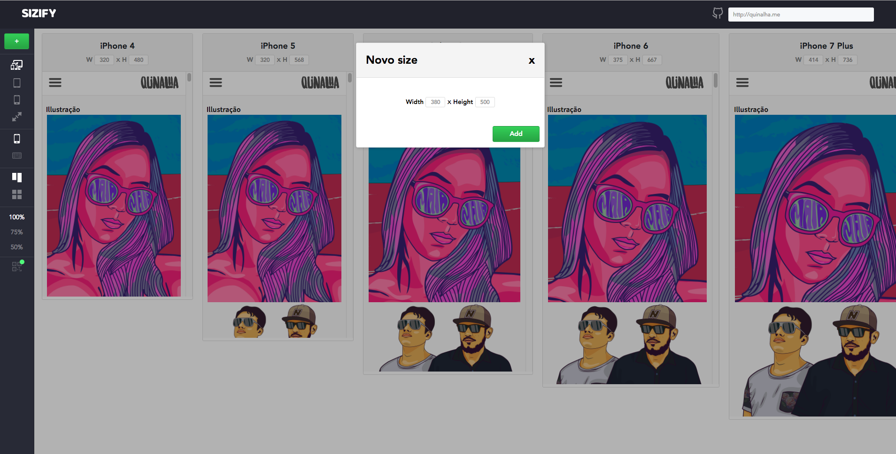
https://gustavoquinalha.github.io/sizify
PDFy
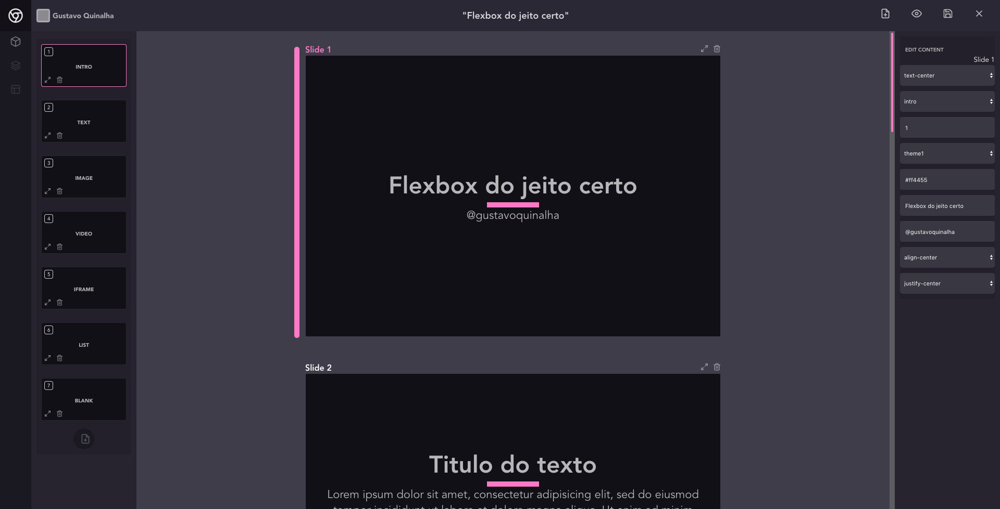
https://gustavoquinalha.github.io/pdfy
Sendify
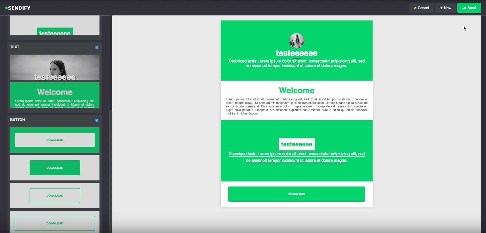
https://gustavoquinalha.github.io/sendify
Seotopper

https://gustavoquinalha.github.io/seotopper
https://github.com/gustavoquinalha/seotopper/tree/seotopper-cli
The grid
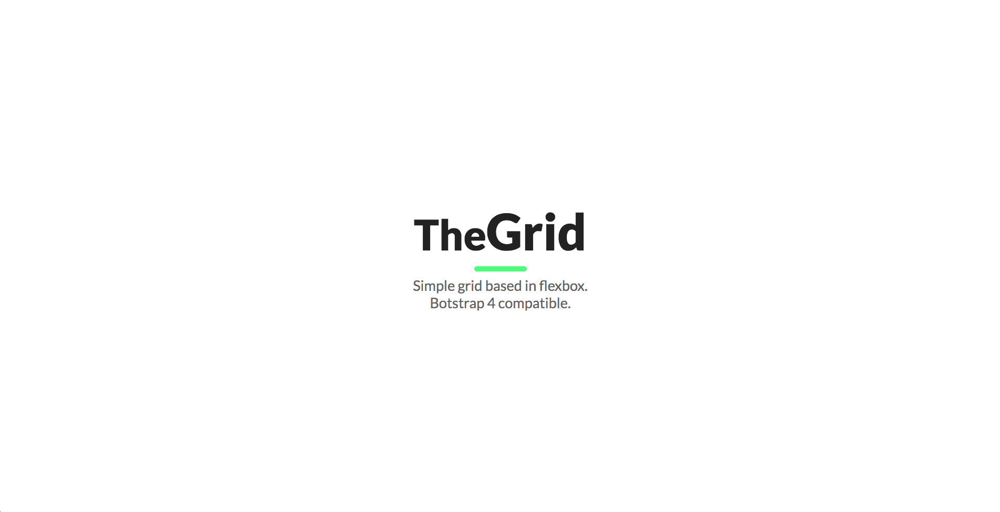
https://gustavoquinalha.github.io/the-grid
Monk framework
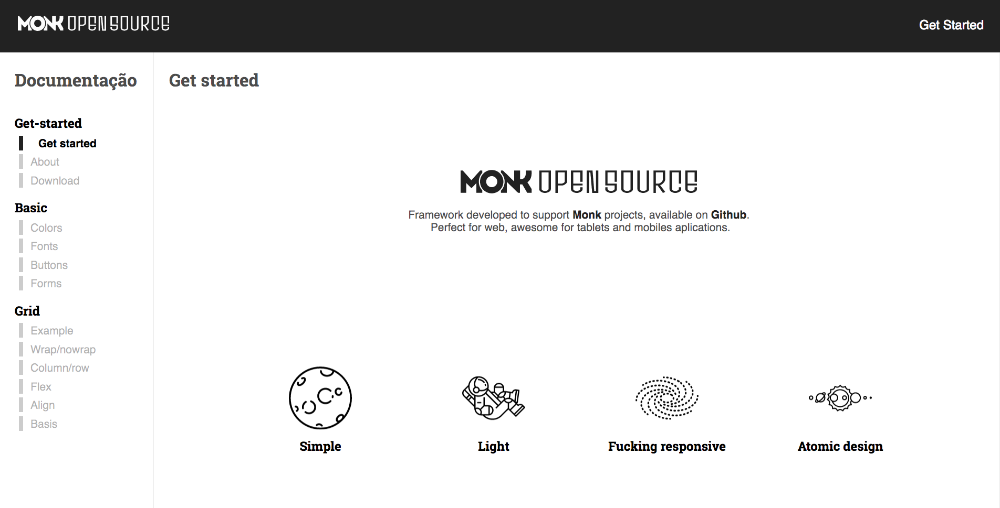
https://agenciamonk.github.io/
dragNDropJS - @usuarioJapa
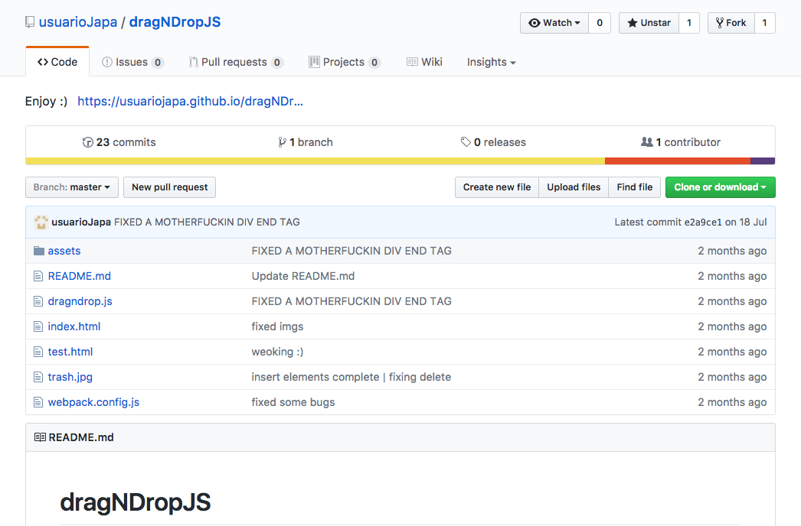
https://github.com/usuarioJapa/dragNDropJS
CSS GRID Layout
CSS Grid Layout tem um enorme poder para criar layouts com CSS, com um sistema bi-dimensional, diferente do flexbox. Ele foi criado apenas para LAYOUTS, simples ou complexos.
Aonde usar flexbox?
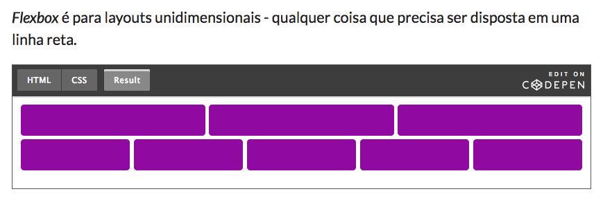
Fonte: https://codepen.io/simoneas02/post/grid-layout
Aonde usar CSS Grid Layout?
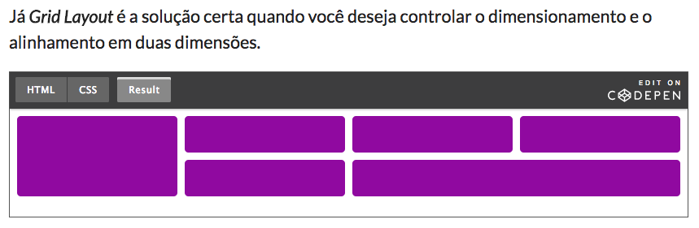
Fonte: https://codepen.io/simoneas02/post/grid-layout
Grid System
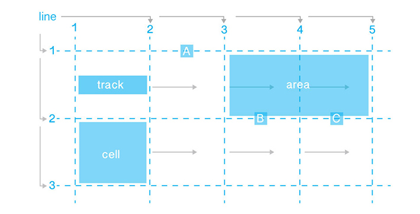

Can i use?

Properties for the Grid Container
- display
- grid-template-columns
- grid-template-rows
- grid-template-areas
- grid-template
- grid-column-gap
- grid-row-gap
- grid-gap
- justify-items
- align-items
- justify-content
- align-content
- grid-auto-columns
- grid-auto-rows
- grid-auto-flow
- grid
Properties for the Grid Items
- grid-column-start
- grid-column-end
- grid-row-start
- grid-row-end
- grid-column
- grid-row
- grid-area
- justify-self
- align-self
Dimensões fixas ou flexíveis
Você pode criar grids com dimensões fixas – por exemplo: definindo dimensões em pixels. Ou criar grids com dimensões flexíveis definindo-as com uso de porcentagem ou da nova unidade CSS fr criada para esse propósito.
Posicionamento de itens
Você pode posicionar com precisão itens de uma página usando o número que define uma linha do grid, usando nomes ou ainda fazendo referência a uma determinada região do grid. Existe ainda um algorítmo de controle do posicionamento de itens da página que não possuem uma posição capaz de ser explícitamente definida no grid.
Criação de grids adicionais
Além da possibilidade de se criar um grid inicial para o layout a Especificação prevê também a possibilidade de se adicionar linhas e colunas para layoutar conteúdos adicionados fora do grid inicial. Funcionalidades tal como adicionar "tantas colunas quanto necessárias em um grid container existente" Fsão previstas nas Especificações.
Alinhamento
Estão previstas funcionalidades de alinhamento que possibilitam controlar o alinhamento dos itens de uma página posicionados no grid e também o alinhamento do prórpio grid como um todo.
Controle sobre conteúdos sobrepostos
Em uma célula do grid podem ser posicionados mais de um item da página e também é possível que se defina sobreposição parcial de áreas. Esse controle de layers é feito com uso de z-index.
CSS Grid Layout é uma poderosa Especificação que se for combinada com outras Especificação das CSS, tal como flexbox, possibilita a criação de layouts que até então eram impossíveis de serem criados com CSS. Tudo começa com a criação de um grid dentro de um grid container.
Fonte: https://developer.mozilla.org/pt-BR/docs/Web/CSS/CSS_Grid_Layout/Basic_Concepts_of_Grid_Layout
Perguntas?
Fique avontade para me mandar suas dúvidas no email gusquinalha@gmail.com ou você tambem pode abrir uma issue nesse repositório.
LINKS FLEXBOX
- https://www.w3.org/TR/css-flexbox-1/
- https://tympanus.net/codrops/css_reference/flexbox/
- https://facebook.github.io/react-native/docs/flexbox.html
- https://hackernoon.com/11-things-i-learned-reading-the-flexbox-spec-5f0c799c776b
- https://medium.freecodecamp.org/even-more-about-how-flexbox-works-explained-in-big-colorful-animated-gifs-a5a74812b053
- https://pt.slideshare.net/rachelandrew/flexbox-and-grid-layout
- https://www.youtube.com/watch?v=_98SE8WUvLk
LINKS CSS GRID LAYOUT
- https://css-tricks.com/snippets/css/complete-guide-grid/
- https://developer.mozilla.org/pt-BR/docs/Web/CSS/CSS_Grid_Layout
- https://developer.mozilla.org/pt-BR/docs/Web/CSS/CSS_Grid_Layout/Basic_Concepts_of_Grid_Layout
- https://codepen.io/simoneas02/post/grid-layout
- https://tympanus.net/codrops/css_reference/grid/
- https://medium.com/@patrickbrosset/css-grid-layout-6c9cba6e8a5a
Obrigado!